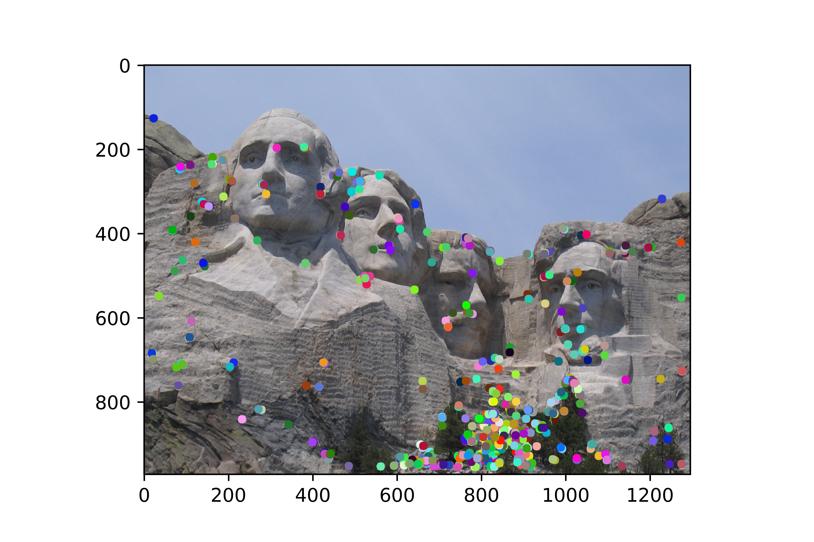

Project 2: Local Feature Matching

Notre Dame Cathedral
Harris Corners
Local Feature matching is an important part of Computer vision as the ability of a computer to correctly match features of images is vital in training the computer to process images and categorize not only the images but the objects in the images with defining characteristics. For this project we first searched for points that had a very high chance of being corners, this was done by using the image derivatives X and Y to create and then calculate the determinant and trace of a moment matrix consisting of 4 blocks of XX, XY, YY. Each pixel was then scored using these numbers and the formula: det-0.06*(trac**2). We then looped through each pixel only considering those above the threshold of 1000 and checked to see if they were not only a local maximum but also if they were at least 10% greater than the scores of each neighboring pixel. Interestingly enough the use of a gaussian blur over the initial image had very little effect on the amount and location of corners identified. However, there was a small increase in accuracy of the overall program by using a Gaussian blur with low standard deviation on each of the blocks in the moment matrix. In some images the number of corners found was extremely large which led to an increase in runtime for the later functions, to mitigate this we only saved the 10,000 highest scored locations (scoring was based on a ratio of the local maximum to its largest neighbor).
SIFT
Once the key points were identified the next step was to create a feature based on a patch of our image surrounding each of our corner points. This was achieved using an algorithm very similar to a standard SIFT. The patch was normalized, broken into 16 smaller patches, each pixel had its gradient calculated then binned by weight into 8 possible gradients for each patch. By doing so we created a 128-point vector that we then normalized and used as out feature. Using this SIFT feature allowed our feature matcher to achieve 87% correctness for the Notre Dame image and 51% for the Mount Rushmore Image. Also, a scaling factor was written for the SIFT in order to attempt to adjust the feature size for images of varying lengths however it failed to identify scaled features satisfactorily.
Feature matching
Once features were collected from each image each feature from the first image was compared against every feature in the second. These features were then scored by taking the 2-norm of the difference between their identifying feature vectors, we then took the lowest scored distance and compared it with its neighbor (nndr) to see if it was in fact the best match (nndr < 1). To eliminate features that were similar but located in vastly different regions of the image we used a suppression radius calculated by taking the geometric means of the dimensions of the smallest subsection of each image that contained all of its corner points. The use of this suppression radius brought accuracy to 95% for the Notre Dame Image and 78% for Mount Rushmore.
- NotreDame 95%
- MountRushmore 78%
- Episcopal Gaudi 0%

|
|  |

|